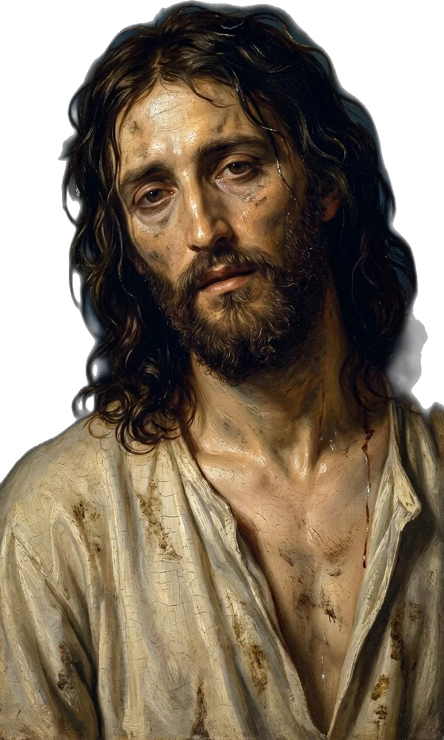
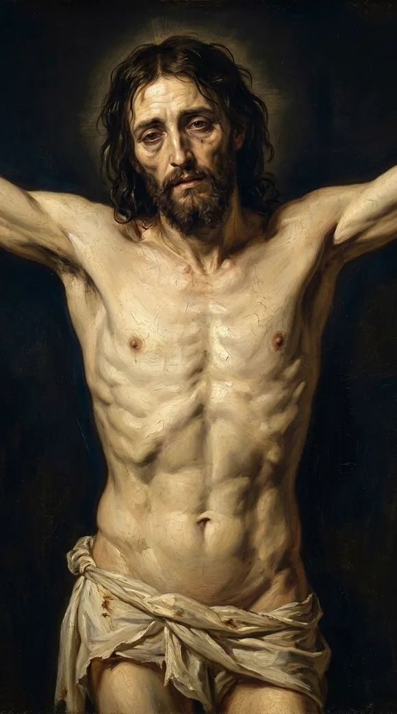
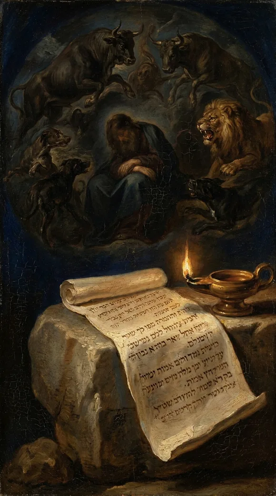
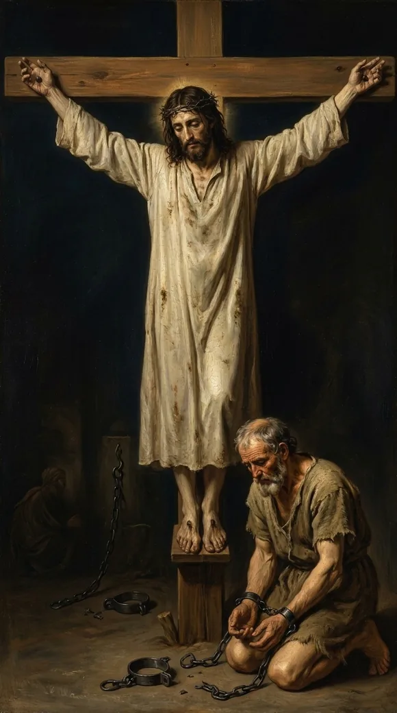

Video will be on YouTube when the series launches.
Poured out, bones out of joint, hands and feet pierced. The psalm's language fits the crucifixion.
The study behind this
Psalm 22 is a cry of King David, set down roughly a thousand years before Christ. It opens in the voice of a man surrounded and abandoned, then bends, line by line, toward a suffering David himself never endured and a rescue that reaches the ends of the earth.
The reading
A king described a dying body so exactly it reads like an eyewitness account of a crucifixion he never saw.
Psalm twenty-two. David wrote it in the first person, but he was describing someone else's death, not his own. Watch the body of the dying man:
I am poured out like water, and all my bones are out of joint...
Psalm 22:14

Drained, and every joint pulled loose, the way a body hangs when it's suspended by the arms. And:

I may tell all my bones: they look and stare upon me.
Psalm 22:17
He could count every bone, stretched and exposed, while onlookers stood and stared at him.

David never saw a crucifixion. Rome would not make it its instrument for centuries. Yet the dying man of his song bears the marks of one, written early.

This is what Jesus bore to bring you home, every wrenched joint, every cold stare, recorded centuries early so you'd know none of it was chance. He was crushed in your place.
Every quotation is the King James Version, verified word for word against the text.